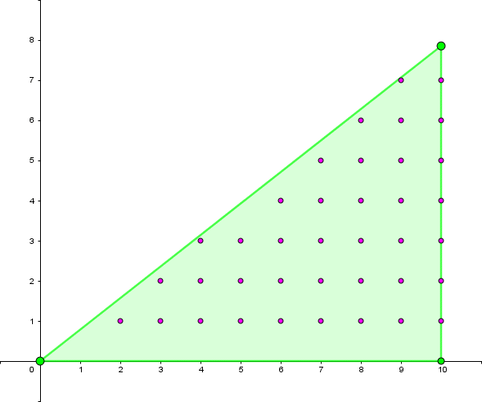

给定正整数 $n, r$，求 $$ \sum_{d=1}^n (-1)^{\left \lfloor \sqrt{d \times r \times d} \right \rfloor} $$
第一行包含一个正整数 $T$ ($T \leq 10^4$)，表示有 $T$ 组测试数据。
接下来 $T$ 行，每行两个正整数 $n, r$ ($n \leq 10^9, r \leq 10^4$)。
输出 $T$ 行，每行一个整数表示答案。
我不知道出题人为什么要把两个 $d$ 放在里面……
所以原式要求的就是 $$ \sum_{d=1}^n (-1)^{\left \lfloor d \sqrt r \right \rfloor} $$
如果 $r$ 是完全平方数 $s^2$，则 $$ \sum_{d=1}^n (-1)^{d \cdot s} = \begin{cases} n & 2 \mid s \\ -(d \bmod 2) & 2 \not\mid s \end{cases}$$
直接特判处理。对于 $r$ 不是完全平方数，记 $k = \sqrt r$ 为无理数，原式要求的就是 $$ \sum_{i=1}^n (-1)^{\left \lfloor ki \right \rfloor} $$
首先设法通过奇偶性将底数 $-1$ 去掉。众所周知，对整数 $n$，有 $n \bmod 2 = \dfrac {1 - (-1)^n} 2$，简单变形得 $(-1)^n = 1 - 2 \cdot (n \bmod 2)$，继续使用模运算的定义 (恒等式 $n = 2 \left \lfloor \dfrac n2 \right \rfloor + (n \bmod 2)$)，因此
$$ (-1)^n = 1 - 2 \cdot (n \bmod 2) = 1 - 2 \cdot \left( n - 2 \left \lfloor \dfrac n2 \right \rfloor \right) = 4 \left \lfloor \dfrac n2 \right \rfloor - 2n + 1 $$
因此就可以把上式中的底数 $-1$ 去掉了，如下：
$$ \sum_{i=1}^n (-1)^{\left \lfloor ki \right \rfloor} = \sum_{i=1}^n \left( 4 \left \lfloor \frac {ki} 2 \right \rfloor - 2 \lfloor ki \rfloor + 1 \right) = 4 \sum_{i=1}^n \left \lfloor \frac k2 \cdot i \right \rfloor - 2 \sum_{i=1}^n \lfloor ki \rfloor + n $$
记 $k' = \dfrac k2$，就可以看出前面两个和式是同一个类型的。
接下来就是对于一个实数 $k$ 计算 $$ \sum_{i=1}^n \lfloor ki \rfloor $$
当然，如果 $k$ 是有理数，那么就是平面三角形内部数点问题，可以使用 Pick 定理通过面积在 $O(1)$ 时间内计算。不过，这里的 $k$ 是无理数 (非平方数开方的产物)，因此我们可以使用一种新的算法——类 Euclid 算法。
其实这个算法和那个最大公约数 Euclid 算法干的事情还真不太一样，但它为什么叫类 Euclid 算法呢？因为它的递归过程与 Euclid 算法很相似。
首先，如果 $k > 1$，则记 $m = \lfloor k \rfloor, k = m + k'$ ($0 < k' < 1$)，那么
$$ \sum_{i=1}^n \lfloor ki \rfloor = \sum_{i=1}^n \left \lfloor (m + k') i \right \rfloor = \sum_{i=1}^n \left( mi + \lfloor k'i \rfloor \right) = \frac {m n (n+1)} 2 + \sum_{i=1}^n \lfloor k'i \rfloor $$
将其转换为 $0 < k < 1$ 的问题。
此时思考它的几何意义。我们就是要求三条直线 $y = kx, y = 0, x = n$ 之间的整点个数。更精确地说，其中包含 $x = n$ 上的整点，不包含 $y = 0$ 上的整点，又 $k$ 为无理数，因此 $y = kx$ 上不可能有整点。
当前我们的算法是枚举每个 $x$，计算每条竖线 (平行于 $y$ 轴的线) 上有多少个整点。由于直线的斜率 $k < 1$，因此我们换个方向，枚举每个 $y$，计算横线 (平行于 $x$ 轴的线) 上的整点数，那么枚举量就会适当减少。也就是说，我们调换了 $x$ 轴和 $y$ 轴，因此斜率取了倒数，变成了 $k > 1$ 的形式 (连分数即视感！)，当然最后是要求一个补集的。
下面用动画演示一下：
更正式地，我们还要求出枚举时对于每个 $y$ 有多少个整点。
上图已经表明，我们是从整个矩形的点阵中减去左上角部分的即得答案。这个矩形的宽度显然是 $n$，高度看得出来应该为 $\lfloor kn \rfloor$。因此，对于任意 $1 \leq y \leq \lfloor kn \rfloor$，我们要找出在直线左边的点数。可以看出，对于给定的 $y$，点数应该为 $\left \lfloor \dfrac yk \right \rfloor$ (此处不用考虑边界，因为已经假设 $k$ 是无理数)，即总点数为 $\sum\limits_{i=1}^{\lfloor kn \rfloor} \left \lfloor \dfrac 1k \cdot y \right \rfloor$。于是就转化为了 $k' = \dfrac 1k$ 的子问题。
由于递归过程中 $n$ 是单调递减的，因此这个算法一定会在有限步内终止。
现在来分析一下时间复杂度，如果只看 $n$，那么只能分析出 $O(n)$。对于第 $i$ 次迭代，我们关注两个量：$n$ 和 $\lfloor kn \rfloor$，并把它记作 $(x_i, y_i)$。可以看出，下一迭代的 $n$ 就是这一次迭代的 $y_i$，即 $x_{i+1} = y_i$，且翻转后下一次迭代的 $\lfloor kn \rfloor$ 应该接近于本次迭代的 $x_i$。然后由于 $k > 1$，故压缩后的 $y_{i+1} = \left \lfloor (k - \lfloor k \rfloor) n \right \rfloor = \lfloor kn \rfloor \bmod n \approx x_i \bmod y_i$
也就是说，每迭代一次，它的状态变化是 $(x_i, y_i) \mapsto (y_i, x_i \bmod y_i)$，和 Euclid 算法的转移相似，故得名类 Euclid 算法。类似地可以分析得出，它的时间复杂度是 $O(\log n)$ 的。
然后你交一发发现只有 40 分？恭喜你被卡精度了。如果直接把浮点数 $k$ 拿去递归的话，精度损失会非常快 (因为取倒数的数都是 $< 1$ 的，尤其是取完后再取小数部分，这也是用浮点数去计算连分数展开式精度损失也非常快的原因)。经实测，使用 double 只能获得 40 分，而使用 long double(或 __float128) 可以获得 60 分 (这里是 __float128)。因此，我们要寻找一种方法来控制浮点精度问题。
注意到这里的 $k = \sqrt r$，为二次根式，且这里面所有的对 $k$ 的操作只有取倒数和减一个整数。利用二次根式的分母有理化性质，可以得到这个过程中的所有浮点数 $k$ 都可以用 $\dfrac {a \sqrt r + b} c$ 的形式表达，其中 $a, b, c$ 均为整数。
因此，我们只需要把其中的 double 等改成传入三个整数，或者像我一样写个结构体。
这样，精度就会提高不少。不过中途如果要取整的话，用 double 或 long double 把 $\dfrac {ak + b} c$ 的具体值算出来再取整数部分也不会损失太大精度。
总体而言，我们可以在 $O(\log n)$ 的时间内解决问题，用的小技巧相对来说还是比较多的。
#include <bits/stdc++.h>
#define N 256101
#define gcd __gcd
using namespace std;
typedef long long ll;
typedef long double ld;
int n, r; ld s;
struct sqrt_float{
int a, b, c; // (a s + b) / c
sqrt_float (int a0 = 0, int b0 = 0, int c0 = 0): a(a0), b(b0), c(c0) {
int d = gcd(gcd(a, b), c); if(d != 1) {a /= d; b /= d; c /= d;}
}
inline ld val() {return ((ld)a * s + (ld)b) / (ld)c;}
inline sqrt_float operator - (int d) {return sqrt_float(a, b - c * d, c);}
inline sqrt_float inverse() {return sqrt_float(a * c, -b * c, a * a * r - b * b);}
};
ll solve(int n, sqrt_float k){
if(!n) return 0;
ld K = k.val();
if(K >= 1.0) {int p = (int)K; return ((ll)p * n * (n + 1) >> 1) + solve(n, k - p);}
int m = (int)(K * (ld)n);
return (ll)n * m - solve(m, k.inverse());
}
int main(){
int T; ll ans;
for(scanf("%d", &T); T; --T){
scanf("%d%d", &n, &r); s = sqrtl(r);
if((int)s * (int)s == r) {printf("%d\n", r & 1 ? -(n & 1) : n); continue;}
ans = (solve(n, sqrt_float(1, 0, 2)) << 1) - solve(n, sqrt_float(1, 0, 1)) << 1;
printf("%lld\n", ans + n);
}
return 0;
}
坑1：记得处理这种特殊形式的浮点数时，及时将 $a, b, c$ "约分"，以免爆 long long！